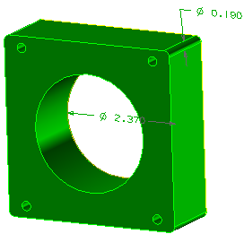
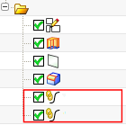
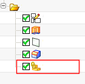

在图形窗口中，选择要创建 WAVE 链接到目标部件中的两个 PMI 直径尺寸。
在设置组中，将 WAVE 链接目标几何体设为拓扑结构。
点击确定。
隐藏除了 pmi_inter_body 之外的所有组件，并旋转以查看 WAVE 链接的 PMI。

在部件导航器中，展开 PMI 节点并注意到其中列出了两个直径尺寸。
在模型历史记录节点中，注意到已经添加了两个链接的复合曲线特征。

由于 WAVE 链接目标几何体设为拓扑结构，因此创建了两个链接的复合曲线特征，它是为两个直径尺寸各创建了一条边，使之与这两条边关联。
|
注释 |
如果您将WAVE 链接目标几何体设为体，那么 NX 将会把 WAVE 链接至整个实体，其中包含两条直径尺寸要关联到的边。  |
关闭部件。